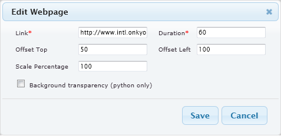

Webpage scale functionality in Windows Client
In Xibo it is possible to show a webpage in a region. Because websites are not build for showing on a big screen, it has a scale functionality in which you can show the webpage in a larger or smaller scale. This is great for showing websites that are too big or too small for the region. Unfortunately, this functionality only works with the Python (Linux) client.
Add a webpage
- Click the "Add Webpage" icon
- A new dialogue will appear:

- Enter all the required information
- Link:
The linked content can be either the full webpage, or an ID defined frame within the webpage e.g. http://www.intl.onkyo.com/#rotateim- Duration:
Display duration in seconds- Offset Top:
Webpage top cropping region for display- Offset Left:
Webpage left cropping region for display- Scale Percentage:
Scale the original webpage for display (larger or smaller)- Backgroup Transparency:
Set background to transparency (python only)- Click "Save"